Narrow cracks off the beaten wayand a keepsake of hers in each
There are six hidden rooms now, one in each part of the descent. Each starts as a narrow crack in an out-of-the-way spot: the far end of a ledge, a low corner, a lip of rock halfway down a shaft. You can see the mouth if you look, but it's easy to walk past.
Each room is drawn as solid rock until the doll first steps inside. Then the room opens up, its name comes up like an area title, and a small keepsake of the knitter's is waiting on the floor.
Please add some hidden rooms or tunnels which lead to some interesting small rooms and maybe some collectibles. These hidden tunnels should be visible but hard to notice so that it's still interesting and challenging.
In each slider below, the before is the same view in the old build. Drag to see how little of the crack shows. Under it is the room once you've walked in.
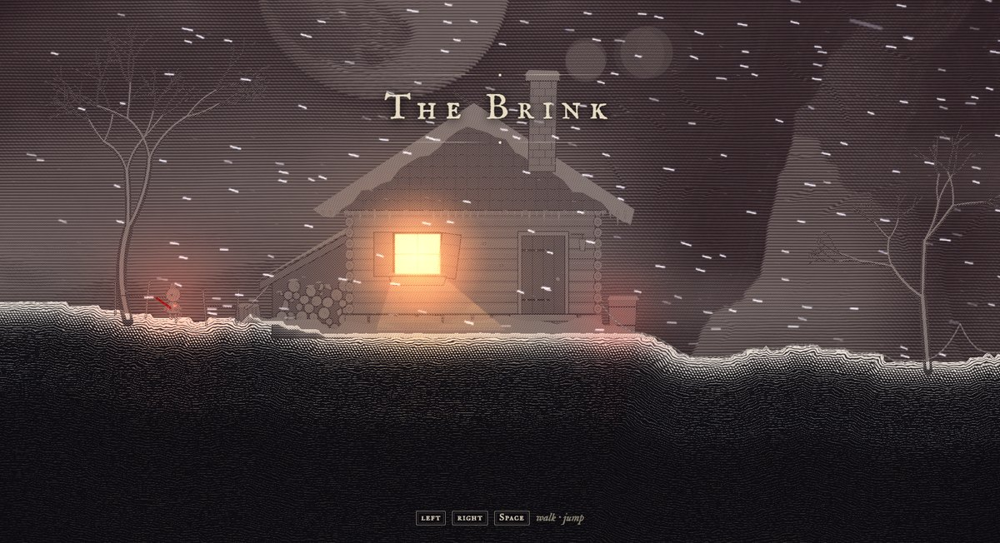
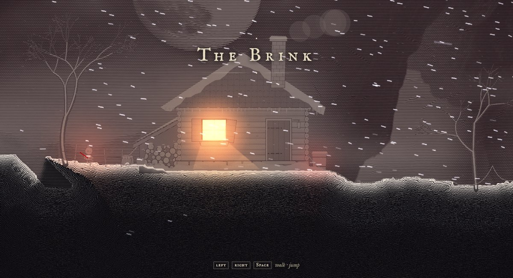
BeforeAfterDrag the thread to compare
The Brink. At the far west edge of the Brink, behind the cottage, there is a slit in the moonlit ground. Walk into it and a steep ramp takes you down to a room under her yard. Jump the slit to get back across.
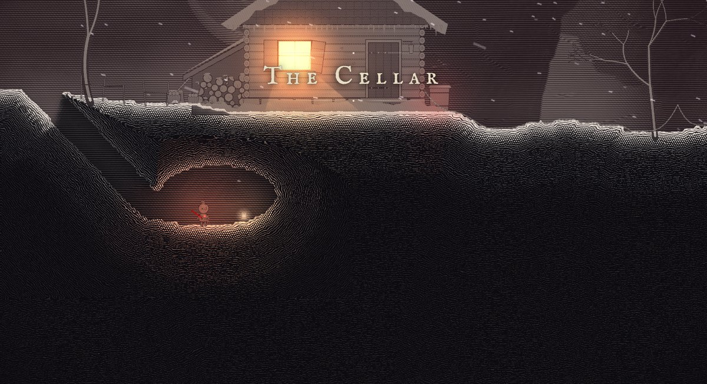
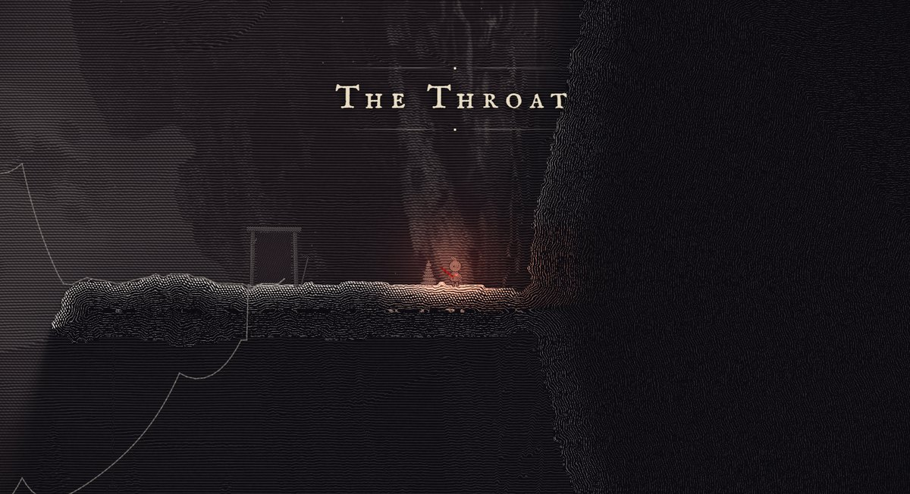
BeforeAfterDrag the thread to compare
The Throat. At the far end of the second ledge down, where the ledge runs into the east wall, a crawl hole about the doll’s height goes on into the rock.
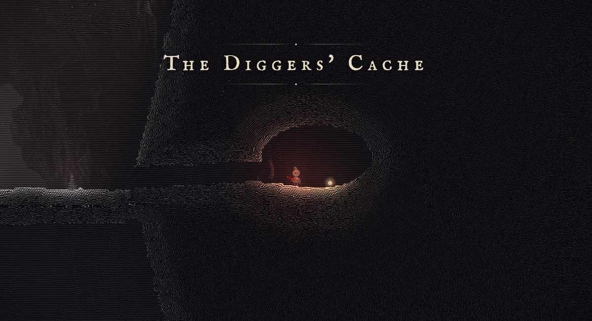
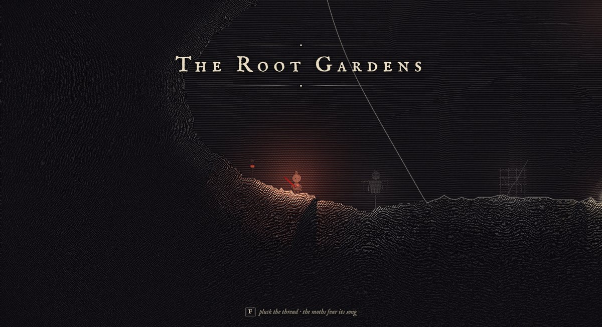
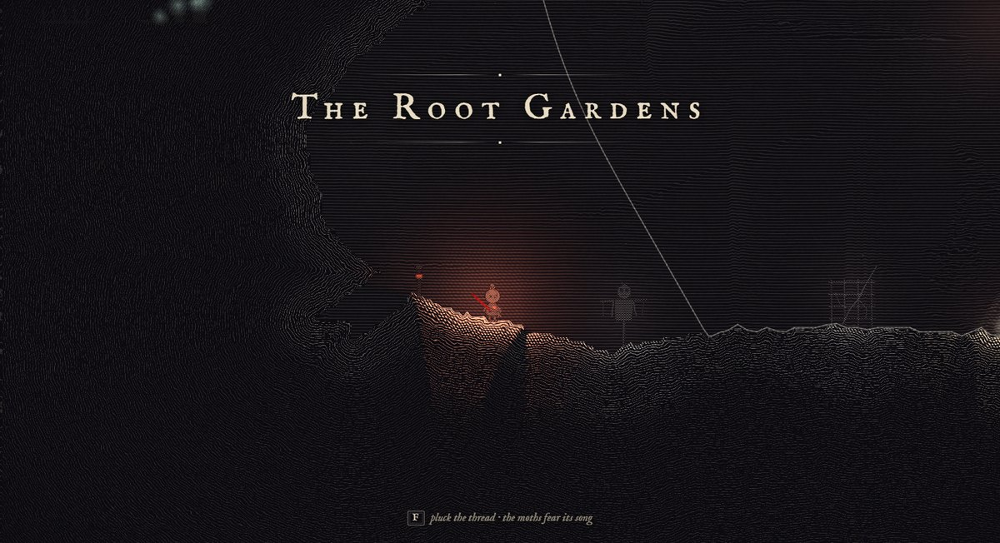
BeforeAfterDrag the thread to compare
The Root Gardens. Low in the west corner of the second garden, a step past the peg, a crack slopes down out of sight. You can walk down and back up.
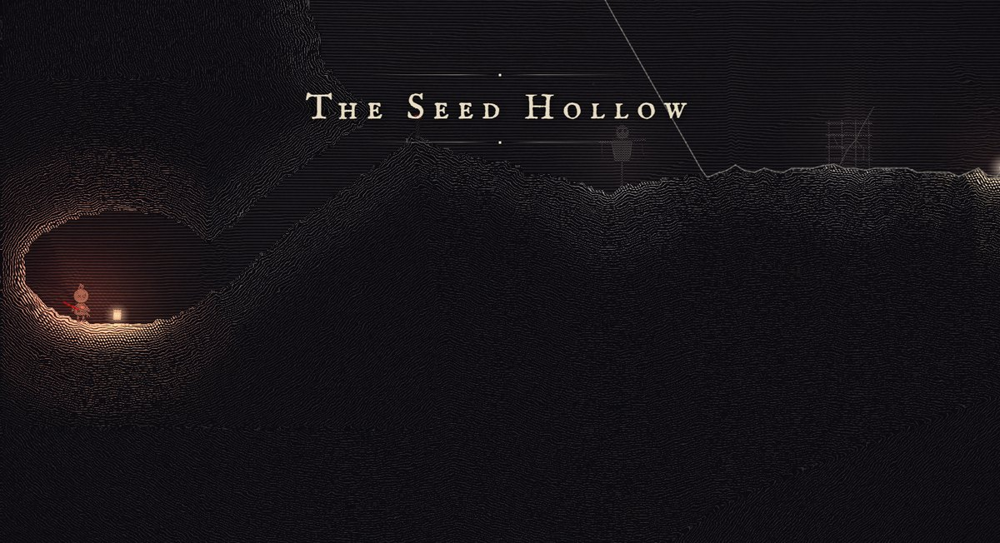
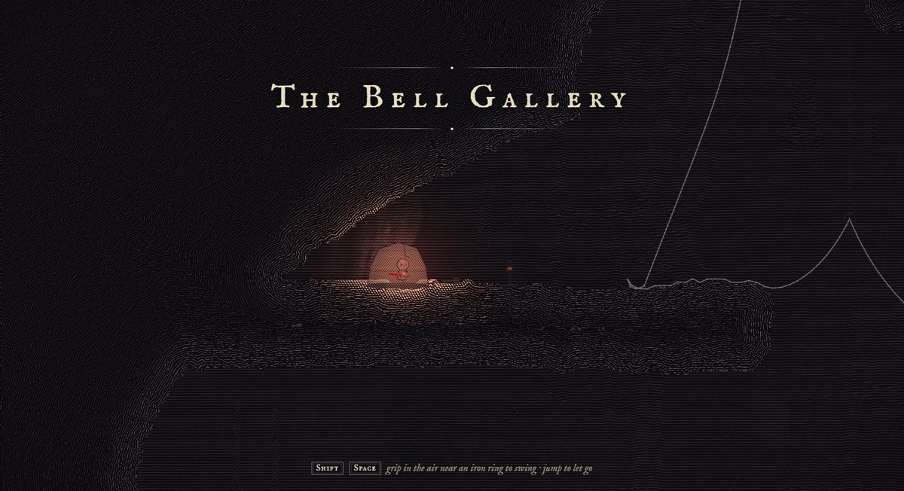
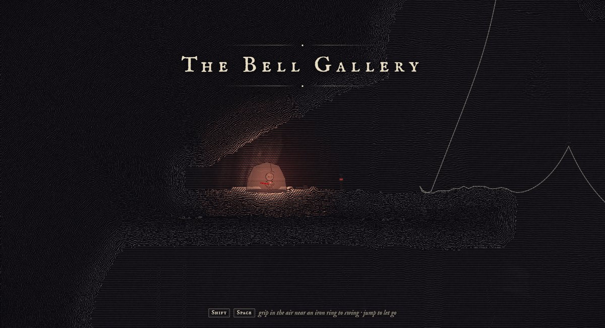
BeforeAfterDrag the thread to compare
The Bell Gallery. Where the west ledge meets the gallery wall, behind the great bell, a low crawl leads to a small room with candles.
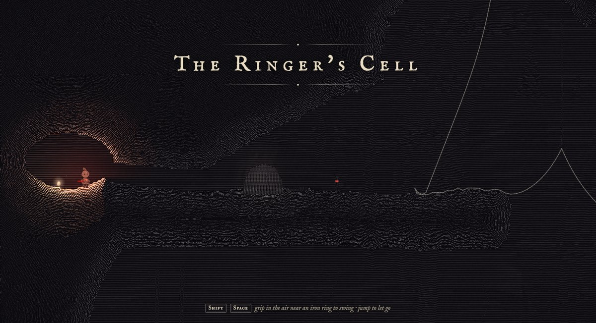
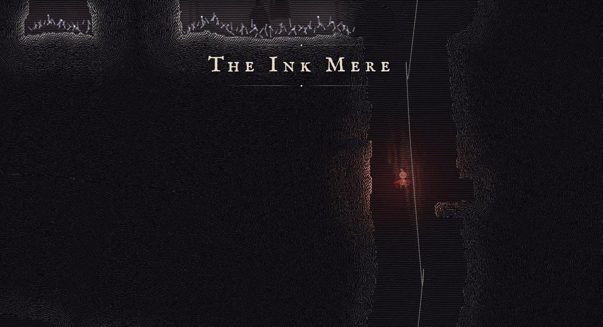
BeforeAfterDrag the thread to compare
The shaft into the Mere. Halfway down the shaft a lip of rock sticks out of the east wall. Lower yourself to it on the thread, pump a few swings toward it and let go over the lip. This one uses the new swing.
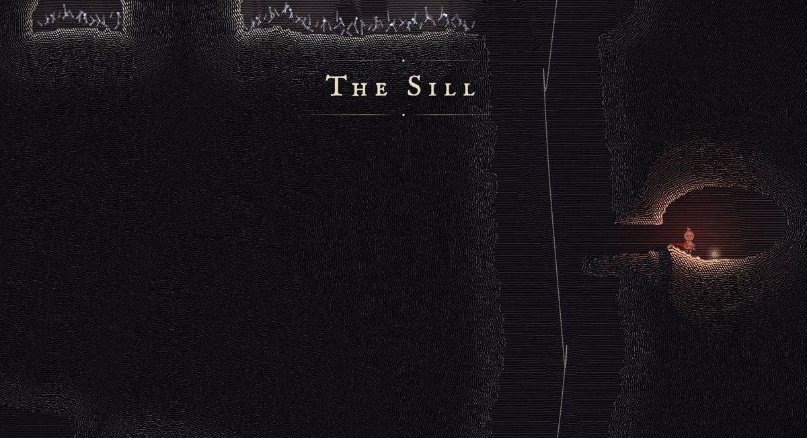
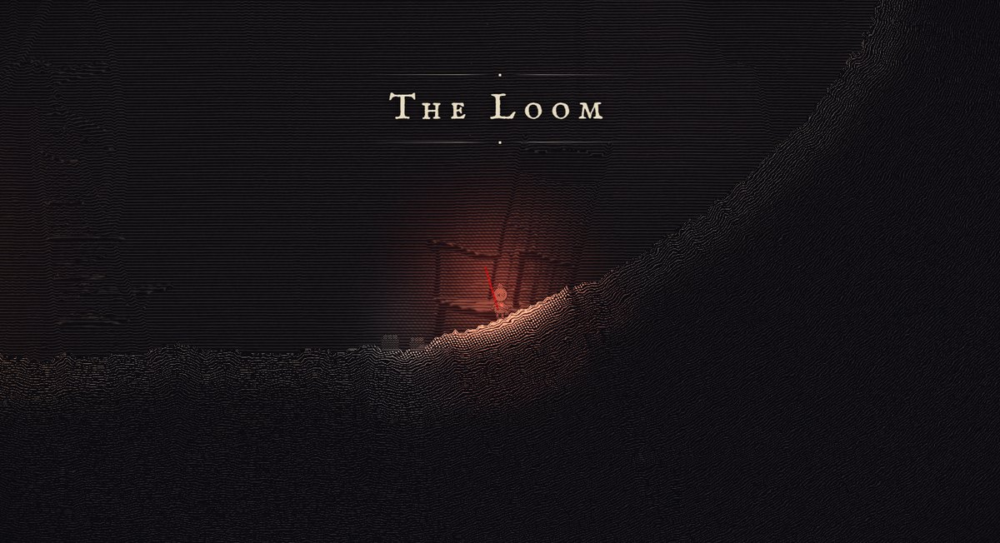
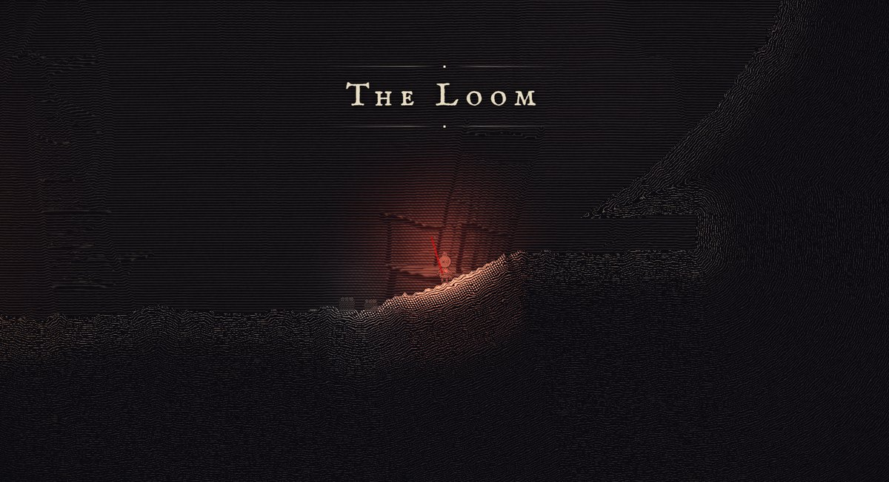
BeforeAfterDrag the thread to compare
The Loom. Where the Loom’s floor meets its east slope, a crawl runs along the floor into the rock.
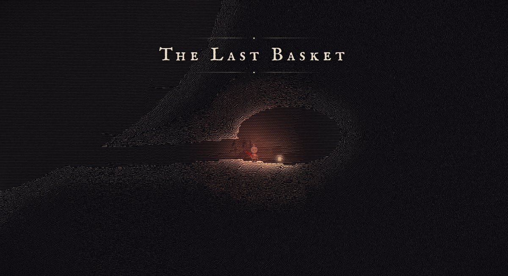
Not checked:
level.js if it needs widening or hiding better.app/src/level.jsThe six cracks and rooms, the gentle-noise zones, and the list of rooms with their keepsakes.app/src/terrain.jsGentle noise near the cracks, and a separate drawn version of the rock with unfound rooms filled in, patched locally when one is found.app/src/world.jsFinding a room, picking up a keepsake, and a faint glint once the room is open.app/src/props.jsDrawings of the six keepsakes, and props dressing the rooms.app/src/main.jsRoom titles, sounds, saving, and the credits line.app/src/renderer.jsUploading and patching the drawn rock.